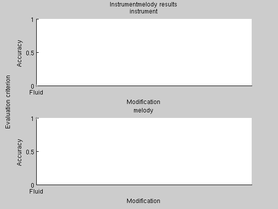
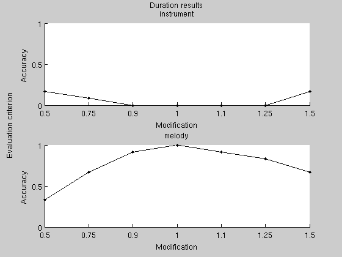

ISP_EVALUATEDEMO2 Demonstration of how to use the evaluation framework
In the following, we evaluate how well the isp_tichroma distance measure behaves when songs are identical except for tempo.
dstMsr = isp_tichroma;
datapath = './evaluatedata';
We only run the test with four different instruments and three melodies. For any serious use, use the default values of 30 instruments and 30 melodies.
tic res = isp_evaluate(dstMsr, ... 'distribute', 'ask', ... 'experiment', {'instrumentmelody', 'duration'}, ... 'dataPath', datapath, ... 'nInstruments', 4, ... 'nMidifiles', 3); toc
Options: 0. Execute without distributing anything. 1. Distribute feature calculation. 2. Merge features and distribute distances. 3. Merge features, compute distances and extract results. 4. Merge distances and extract results. 5. Show results. What do you want to do? 0 0 Testing distance measure Tempoinvariant chroma. Performing instrumentmelody test. Warning: Fewer instruments selected than expected. Executing /home/jesper/no_backup/isptoolbox/toolbox/isp_mf2t.GLNX86 "/home/jesper/no_backup/isptoolbox/toolbox/shortmidifiles/50s Rock.mid" "/tmp/file6fcJ8L.txt" Modifying instrumentation. Executing /home/jesper/no_backup/isptoolbox/toolbox/isp_t2mf.GLNX86 "/tmp/fileLu0uhr.txt" "/tmp/fileMwPcEm.mid" Executing /home/jesper/no_backup/isptoolbox/toolbox/isp_timidity.GLNX86 -idq -s 11025 -Ow --output-stereo -o "/tmp/fileqreHh5.wav" -c "/tmp/file41lTiU.cfg" "/tmp/fileMwPcEm.mid" /proc/share/timidity/timidity.cfg: No such file or directory Playing /tmp/fileMwPcEm.mid ... Computing distance matrix. Evaluating distance matrix. Evaluating distance matrix. Elapsed time is 1019.878283 seconds.
Finally, we plot the results. In Figure 1, we see that the melody recognition accuracy is 100%, and the instrument recognition accuracy is 0, which is what we would except for a distance measure developed for cover song recognition. In Figure 2, we see that when the length of a song is 3/4 of the original, the melody recognition accuracy drops to somewhere between 60% and 70%. Again, with only 4 instruments and 3 melodies in the test set, these results should be taken with a grain of salt.
isp_plotresults(res, 'xaxis', 'modification'); 
| Intelligent Sound Processing Toolbox | Contents |